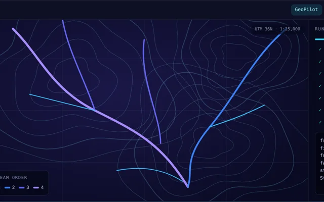
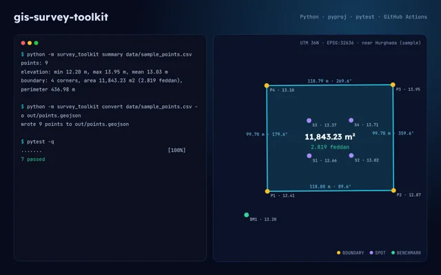
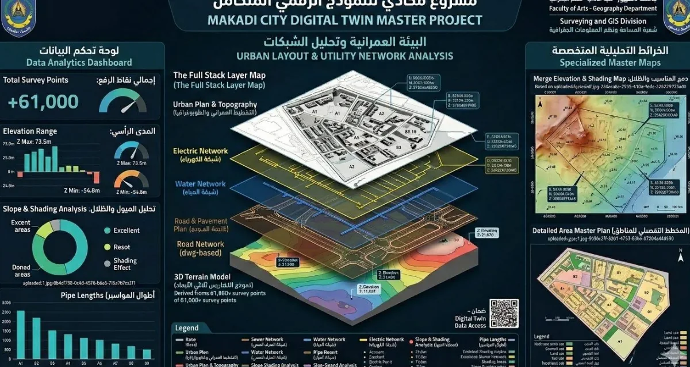
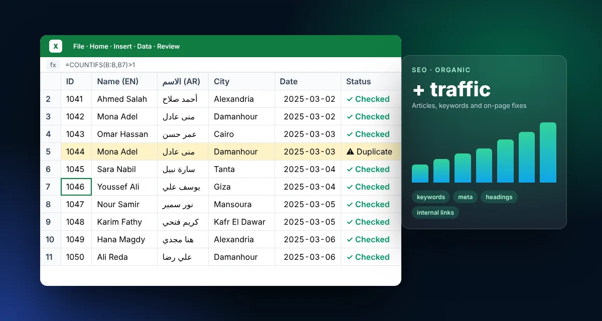

حزم تحليل بخطوة واحدة
سير عمل للهيدرولوجيا والشبكات والطبوغرافيا والمرافق يربط كل الأدوات ويرمّز النتيجة.
GIS Developer/Python · ArcPy/QA Engineer
مرحبًا، أنا
مطوّر GIS: ArcGIS Pro وArcPy وQGIS، ومختبر جودة ويب وموبايل، ومطوّر Flutter، وأبني أدواتي بالذكاء الاصطناعي
أبني أدوات GIS وأؤتمت التحليل المكاني بـ Python وArcPy: الهيدرولوجيا والشبكات والطبوغرافيا وفحص المرافق، من نقاط الرفع المساحي حتى لوحات خرائط جاهزة للطباعة. وأعمل أيضًا مختبر جودة في Findo Group على تطبيقات Flutter ومنصات الويب، وأشارك في تطوير Flutter مع الفريق نفسه.
import arcpy
dev = {
"role": "GIS Developer",
"stack": ["ArcPy", "ArcGIS Pro", "QGIS"],
"also": ["QA", "Flutter"],
"remote": True,
}gis_dev/geopilot.py
GeoPilot هي الأداة المرافقة لـ ArcGIS Pro التي أبنيها: تختار التحليل، وتُدخل أقل قدر من البيانات، فتنفّذ كل خطوات المعالجة الجغرافية، وتكتب كود ArcPy حقيقيًا، وتُخرج طبقات مُرمّزة جاهزة للوحة الخريطة.
RUN LOG 0%
اختر أي لقطة لعرضها كاملة.
سير عمل للهيدرولوجيا والشبكات والطبوغرافيا والمرافق يربط كل الأدوات ويرمّز النتيجة.
كل حزمة تكتب كود Python الذي نفّذته، فيمكن مراجعة النتائج وإعادة استخدامها وجدولتها.
قواعد سمات بلغة Arcade ومجموعات فحص جودة، بعادة المختبر في مراجعة كل سجل.
قوالب لوحات بتسلسل عناوين ومفتاح خريطة وخريطة موقع مصغّرة، مكبّرة على حدود المعالم.
github.com/zyadweb4
مستودعات مفتوحة المصدر تقدر تقرأ كودها وتشغّلها وتختبرها: الكود وراء شغل GIS والجودة والأتمتة. كل صورة هنا مخرجات حقيقية من المستودع نفسه.
أداتي بلغة Python تأخذ نقاط الرفع من التوتال ستيشن أو GPS (ملف CSV بإحداثيات UTM) وتحوّلها إلى بيانات GIS جاهزة: تحويل UTM ↔ WGS 84 بـ pyproj، وGeoJSON لـ ArcGIS Pro وQGIS، وKML لـ Google Earth، ومساحة القطعة ومحيطها بطريقة الإحداثيات (بالمتر والفدان)، والانحراف والمركز، ورسائل خطأ واضحة لملفات الميدان التالفة.
def polygon_area(poly: Sequence[XY]) -> float:
"""Area in square metres using the shoelace (coordinate) method, as used for land parcels."""
pts = _closed(poly)
s = 0.0
for (x1, y1), (x2, y2) in zip(pts, pts[1:] + pts[:1]):
s += x1 * y2 - x2 * y1
return abs(s) / 215 حالة اختبار آلية بـ Playwright وTypeScript (الدخول والترتيب والسلة وإجمالي الطلب والتحقق) على Chrome ومقاس Pixel 7 (30 تشغيلًا)، بنمط Page Objects وCI، ومعها خطة الاختبار وحالات الاختبار اليدوية وتقارير الأخطاء المطابقة.
شاهد الكودسير عمل n8n يجمع وظائف عن بُعد من ستة مصادر، ويقيّم كل وظيفة ويكتب خطاب تقديم بالذكاء الاصطناعي، ويحفظها في Google Sheets ويرسل ملخصًا يوميًا على Gmail، مع خطوة موافقة يدوية قبل التقديم. عقد الكود مكتوبة JavaScript عادية في مجلد src.
شاهد الكودداخل GeoPilot: 128 سكربت ArcPy جاهز في 13 قسمًا (الحقول، الحساب، الإحداثيات، خاص بمصر، فحص الجودة، الراستر، اللوحات، الأتمتة بالجملة…)، ولكل سكربت ملاحظة عربية قصيرة. تختار الطبقة والحقل فيتعبّى الكود، ثم تشغّله داخل ArcGIS Pro أو تحفظه .py.
شاهد GeoPilotprojects/
تحليل GIS وأتمتته، وأعمال المكتب الفني والنمذجة ثلاثية الأبعاد، إلى جانب مشاريع الجودة والويب. اختر أي بطاقة لعرض جميع لوحاتها.

GIS · Devإضافتي لـ ArcGIS Pro (C# / .NET مع محرك Python): حزم هيدرولوجيا ومساحة وأراضٍ وشبكات وتصميم بخطوة واحدة تكتب كود ArcPy حقيقيًا، وقواعد Arcade تلقائية، و128 سكربت جاهز، ولوحات طباعة. الإصدار 1.2.11، 2026.
ArcGIS Pro SDK · C# · ArcPy · Arcade
GIS · Pythonمفتوح المصدرأداتي مفتوحة المصدر بلغة Python: نقاط الرفع من التوتال ستيشن أو GPS تتحول إلى GeoJSON وKML لـ ArcGIS Pro وQGIS وGoogle Earth، مع تحويل UTM ↔ WGS 84 ومساحة القطع بالفدان والانحراف واختبارات آلية.
Python · pyproj · pytest · GitHub Actionsتطبيق سطح مكتب (Electron + Playwright) يفتح أي موقع، ويشغّل 20 مجموعة اختبار آلية، ويُخرج تقريرًا بالمشكلات المكتشفة. مشروع شخصي، 2026.
Electron · Playwright · JavaScriptاختبارات آلية شاملة بـ Playwright وTypeScript بنمط Page Objects وCI، مربوطة حالة بحالة بخطة اختبار وحالات اختبار وتقارير أخطاء مكتوبة.
Playwright · TypeScript · GitHub Actionsمواقع شركات بـ Elementor ومتاجر WooCommerce كاملة، إلى جانب المشاريع المدرجة في ملفي على GitHub: RNTUP (Flutter)، وClinic System، وFootwear Store، وموقع Findo Group.
WordPress · WooCommerce · Fluttercertificates
10 شهادات، منها 4 من Esri الشركة المطوّرة لـ ArcGIS. نسخ أصلية: اختر أي شهادة لعرضها كاملة.
Esri والدورات الأونلاين
التدريب والجامعة والذكاء الاصطناعي
about.md
مطوّر GIS بخبرة عملية تقارب أربع سنوات على ArcGIS Pro وQGIS وAutoCAD وCivil 3D. أحوّل عمليات المعالجة الجغرافية متعددة الخطوات إلى سير عمل مؤتمت قابل للتكرار بـ Python وArcPy، وأبني حاليًا GeoPilot، أداة مرافقة لـ ArcGIS Pro تشغّل حزم تحليل كاملة بخطوة واحدة. وفي 2026 أنهيت دورة مقدمة في ArcGIS (60 ساعة) في معهد تكنولوجيا المعلومات ITI، وكورس Esri لعلم البيانات المكانية (Spatial Data Science، ستة أسابيع): نماذج التنبؤ بـ Forest-based، ونمذجة الملاءمة، والنقاط الساخنة وتحليل الأنماط المكانية الزمنية، واكتشاف الكائنات بالتعلم العميق على ArcGIS Pro.
مختبر جودة برمجيات قضيت 3 سنوات في Findo Group: عامين في إدخال البيانات وتحسين محركات البحث (SEO)، ثم عامًا في اختبار تطبيقات Flutter على iOS وAndroid ومنصات الويب عن بُعد. أكتب حالات اختبار وتقارير أخطاء واضحة، وأنفّذ الاختبار الوظيفي واختبار الانحدار والاختبار الاستكشافي، وأتابع المشكلات على Jira. بين يوليو وسبتمبر 2026 وثّقت 69 مشكلة في 5 منتجات.
أختبر ميزات الذكاء الاصطناعي داخل التطبيقات، وأستخدم Claude وClaude Code وChatGPT وGemini يوميًا لصياغة حالات الاختبار وبناء الأدوات. بنيت QA Pro، وهو تطبيق سطح مكتب بـ Electron وPlaywright يشغّل 20 مجموعة اختبار آلية على أي موقع. وحاصل على شهادة Claude 101 من Anthropic (2026).
وقبل الاختبار، عملت نحو أربع سنوات على AutoCAD وCivil 3D ونظم المعلومات الجغرافية: رفع مساحي ميداني وتحليل مكاني ولوحات مكتب فني، وختمتها بمشروع تخرج نال شهادة شكر وتقدير للتفوق.
من إدخال البيانات إلى تقارير الأخطاء، أراجع كل سجل وكل خطوة قبل التسليم.
أختبر التعريب واتجاه الكتابة من اليمين لليسار، وألتقط النصوص العربية الخاطئة أو غير الطبيعية.
عندما أحتاج أداة أبنيها بنفسي، مثل QA Pro لاختبار المواقع آليًا.
tracks/
أربعة تخصصات، لكل منها صفحة خاصة: ما أقوم به، والنتائج بالأرقام، والأدوات، ونماذج من العمل.

01
04Findo Group
تخصص إدخال البيانات وSEOFindo Group
بناء مواقع العملاء وصيانتها بـ Elementor وWooCommerce، منها متجر Riza Queen (riza-store.com) وموقع ARK اللوجستي ونظام UrClinic ومنصة مزايدة: الدومين والاستضافة وSSL والحماية وSEO.
تخصص الويبFindo Group · عن بُعد · دوام كامل
تخصص الجودةتخصص الويبskills.json
الأدوات التي أستخدمها يوميًا، مقسّمة حسب نوع العمل.
education
كلية الآداب، جامعة دمنهور
مشروع التخرجمدينة ذكية مدعومة بالذكاء الاصطناعي في الغردقة (البحر الأحمر)، من الرفع المساحي حتى المخرجات النهائية على ArcGIS Pro وCivil 3D وAutoCAD وSurfer. نال شهادة شكر وتقدير للتفوق.

contact()
تبحث عن مطوّر GIS أو مختبر جودة؟ البريد الإلكتروني وواتساب أسرع وسيلتين للتواصل معي.
z7887008@gmail.com+20 102 537 0757